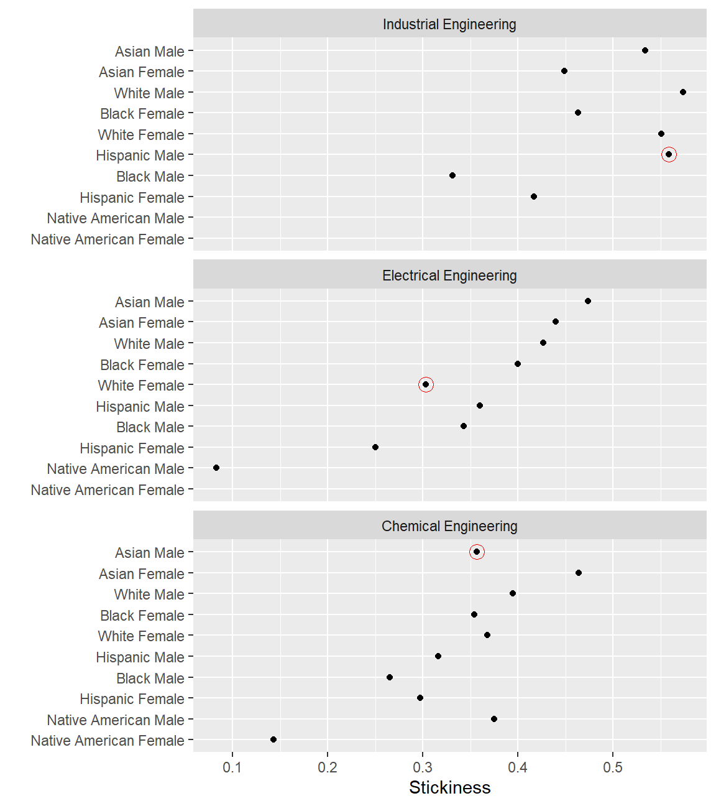

This exercise illustrates a typical workflow for computing a persistence metric, starting with student record data from MIDFIELD (Ohland and Long 2016) and ending with a multiway graph.
Our metric in this case is “stickiness”, the ratio of the number of students graduating from a program to the number ever enrolled in the program (Ohland et al. 2012). We compare the stickiness of three engineering programs with students grouped by program, race/ethnicity, and sex.
In this introductory example, conveying what is more important than how. We focus on what the steps are and how they fit together. How the code works is explained in greater detail in the vignettes (link).
In this example, we compare the stickiness of three programs—Chemical Engineering, Electrical Engineering, and Industrial Engineering—grouping students by program, race/ethnicity, and sex.
We start by searching the cip data set for the 6-digit codes of our programs. Our first search using get_cip() is for engineering generally. The search is refined by searching on specific program key words.
# first pass sub_cip <- get_cip(data = cip, keep_any = "engineering") # examine the full result str(sub_cip) #> 'data.frame': 121 obs. of 6 variables: #> $ cip2 : chr "14" "14" "14" "14" ... #> $ cip2name: chr "Engineering" "Engineering" "Engineering" "Engineering" ... #> $ cip4 : chr "1401" "1401" "1402" "1403" ... #> $ cip4name: chr "Engineering, General" "Engineering, General" "Aerospace, Aeronautical and Astronautical Engineering" "Agricultural, Biological Engineering and Bioengineering" ... #> $ cip6 : chr "140101" "140102" "140201" "140301" ... #> $ cip6name: chr "Engineering, General" "Pre-Engineering" "Aerospace, Aeronautical and Astronautical, Space Engineering" "Agricultural, Biological Engineering and Bioengineering" ... # examine the result at the 2-digit level unique(sub_cip[, c("cip2", "cip2name")]) #> cip2 cip2name #> 1 14 Engineering #> 57 15 Engineering Technology #> 119 29 Military Technologies #> 121 51 Health Professions and Related Clinical Sciences
We refine the result by operating on the sub_cip data frame we just created.
# second pass sub_cip2 <- get_cip( data = sub_cip, keep_any = c("chemical", "electrical", "industrial"), drop_any = "technolog" ) # examine the result at the 4-digit level unique(sub_cip2[, c("cip4", "cip4name")]) #> cip4 cip4name #> 1 1407 Chemical Engineering #> 4 1410 Electrical, Electronics and Communications Engineering #> 8 1435 Industrial Engineering #> 9 1443 Biochemical Engineering
The results show that the 4-digit codes we want are 1407, 1410, and 1435. We use get_cip() again to extract the 6-digit codes for these specific programs. With label_programs() we extract the 6-digit columns only and add a program label.
# get chemical engineering che_cip <- get_cip(data = sub_cip2, keep_any = "^1407") che <- label_programs(data = che_cip, label = "Chemical Engineering") # view the result che #> cip6 cip6name program #> 1 140701 Chemical Engineering Chemical Engineering #> 2 140702 Chemical and Biomolecular Engineering Chemical Engineering #> 3 140799 Chemical Engineering, Other Chemical Engineering
Repeat for electrical and industrial engineering.
# get electrical engineering ece_cip <- get_cip(data = sub_cip2, keep_any = "^1410") ece <- label_programs(data = ece_cip, label = "Electrical Engineering") # get industrial engineering ise_cip <- get_cip(data = sub_cip2, keep_any = "^1435") ise <- label_programs(data = ise_cip, label = "Industrial Engineering")
We combine the three programs into one data frame.
# gather the programs in the study program_group <- rbind(che, ece, ise) # examine the result program_group #> cip6 cip6name #> 1 140701 Chemical Engineering #> 2 140702 Chemical and Biomolecular Engineering #> 3 140799 Chemical Engineering, Other #> 4 141001 Electrical, Electronics and Communications Engineering #> 5 141003 Laser and Optical Engineering #> 6 141004 Telecommunications Engineering #> 7 141099 Electrical, Electronics and Communications Engineering, Other #> 8 143501 Industrial Engineering #> program #> 1 Chemical Engineering #> 2 Chemical Engineering #> 3 Chemical Engineering #> 4 Electrical Engineering #> 5 Electrical Engineering #> 6 Electrical Engineering #> 7 Electrical Engineering #> 8 Industrial Engineering
We can see that our custom program names are consistent with the default 6-digit CIP names, so we can dispense with the cip6names column. The program column is used later for grouping, summarizing, and joining.
# verbose column can be deleted program_group$cip6name <- NULL # examine the result program_group #> cip6 program #> 1 140701 Chemical Engineering #> 2 140702 Chemical Engineering #> 3 140799 Chemical Engineering #> 4 141001 Electrical Engineering #> 5 141003 Electrical Engineering #> 6 141004 Electrical Engineering #> 7 141099 Electrical Engineering #> 8 143501 Industrial Engineering
We extract the cip6 column as a character vector to gather student data.
# extract a vector of 6-digit CIP codes group_codes <- program_group$cip6 # examine the result group_codes #> [1] "140701" "140702" "140799" "141001" "141003" "141004" "141099" "143501"
We use get_enrollees() to extract the IDs of all students who ever enrolled in the programs listed in group_codes. The default data argument is midfieldterms.
# extract students ever enrolled enrollees <- get_enrollees(data = midfieldterms, codes = group_codes) # examine the result str(enrollees) #> 'data.frame': 6402 obs. of 2 variables: #> $ id : chr "MID25783178" "MID25783178" "MID25783197" "MID25783257" ... #> $ cip6: chr "140701" "143501" "140701" "140701" ...
feasible completion here
We use get_race_sex() to obtain the race/ethnicity of each enrollee. The default data argument is midfieldstudents.
# get student race/ethnicity and sex ids_we_seek <- enrollees$id demographics <- get_race_sex(data = midfieldstudents, keep_id = ids_we_seek) # examine the result str(demographics) #> 'data.frame': 6190 obs. of 3 variables: #> $ id : chr "MID25783178" "MID25783197" "MID25783257" "MID25783491" ... #> $ race: chr "Black" "White" "White" "White" ... #> $ sex : chr "Male" "Male" "Male" "Male" ...
Now we can join the race/ethnicity and sex data frame to the enrollees data frame.
# join the two data frames enrollees <- merge(enrollees, demographics, all.x = TRUE) # examine the result str(enrollees) #> 'data.frame': 6402 obs. of 4 variables: #> $ id : chr "MID25783178" "MID25783178" "MID25783197" "MID25783257" ... #> $ cip6: chr "140701" "143501" "140701" "140701" ... #> $ race: chr "Black" "Black" "White" "White" ... #> $ sex : chr "Male" "Male" "Male" "Male" ...
We join the program names from program_group to our working data frame so we can count by groups in the next step.
# join the program names enrollees <- merge(enrollees, program_group, all.x = TRUE) # examine the result str(enrollees) #> 'data.frame': 6402 obs. of 5 variables: #> $ cip6 : chr "140701" "140701" "140701" "140701" ... #> $ id : chr "MID25783178" "MID26457912" "MID25783197" "MID25783257" ... #> $ race : chr "Black" "White" "White" "White" ... #> $ sex : chr "Male" "Male" "Male" "Male" ... #> $ program: chr "Chemical Engineering" "Chemical Engineering" "Chemical Engineering" "Chemical Engineering" ...
To frame our results in terms of program, race/ethnicity, and sex, we group by these variables and count the number of students in each grouping. The count is assigned to the new ever column.
# initialize the variable `ever` to hold the count enrollees$ever <- 0 # group by the framing variables and count grouped_enrollees <- aggregate(ever ~ race + sex + program, data = enrollees, function(x) ever <- length(x) ) # examine the result str(grouped_enrollees) #> 'data.frame': 48 obs. of 4 variables: #> $ race : chr "Asian" "Black" "Hispanic" "International" ... #> $ sex : chr "Female" "Female" "Female" "Female" ... #> $ program: chr "Chemical Engineering" "Chemical Engineering" "Chemical Engineering" "Chemical Engineering" ... #> $ ever : int 56 147 37 8 7 11 6 462 98 98 ...
Note the change in the size of the data frame, from 6402 in enrollees where every row is a student to 48 in the grouped_enrollees below where every row is a group.
A similar process is used to group and summarize our graduates. We start with get_graduates() with a default data argument of midfielddegrees. For graduates, the question of completion feasibility is moot—graduation itself establishes feasibility. Thus we omit the the feasible completion filter in this step.
# gather individual graduating students graduates <- get_graduates(data = midfielddegrees, codes = group_codes) ids_we_seek <- graduates$id demographics <- get_race_sex(data = midfieldstudents, keep_id = ids_we_seek) graduates <- merge(graduates, demographics, all.x = TRUE) graduates <- merge(graduates, program_group, all.x = TRUE) # initialize the grad count column graduates$grad <- 0 # group by the framing variables grouped_graduates <- aggregate(grad ~ race + sex + program, data = graduates, function(x) grad <- length(x) ) # examine the result str(grouped_graduates) #> 'data.frame': 45 obs. of 4 variables: #> $ race : chr "Asian" "Black" "Hispanic" "International" ... #> $ sex : chr "Female" "Female" "Female" "Female" ... #> $ program: chr "Chemical Engineering" "Chemical Engineering" "Chemical Engineering" "Chemical Engineering" ... #> $ grad : int 26 52 11 4 1 1 3 170 35 26 ...
Note that we have 48 groupings of enrollees but only 45 groupings of graduates. Some enrollee groups have no graduates.
We join the two data frames by our framing variables (program, race/ethnicity, and sex), producing a data frame with ever and grad for each group.
# join graduates to ever enrolled metric <- merge(grouped_enrollees, grouped_graduates, all.x = TRUE) # examine the result, ordered by program metric[order(metric$program), , drop = FALSE] #> race sex program ever grad #> 1 Asian Female Chemical Engineering 56 26 #> 4 Asian Male Chemical Engineering 98 35 #> 7 Black Female Chemical Engineering 147 52 #> 10 Black Male Chemical Engineering 98 26 #> 13 Hispanic Female Chemical Engineering 37 11 #> 16 Hispanic Male Chemical Engineering 57 18 #> 19 International Female Chemical Engineering 8 4 #> 22 International Male Chemical Engineering 23 7 #> 25 Native American Female Chemical Engineering 7 1 #> 28 Native American Male Chemical Engineering 8 3 #> 31 Other Female Chemical Engineering 11 1 #> 34 Other Male Chemical Engineering 28 3 #> 37 Unknown Female Chemical Engineering 6 3 #> 40 Unknown Male Chemical Engineering 4 2 #> 43 White Female Chemical Engineering 462 170 #> 46 White Male Chemical Engineering 896 354 #> 2 Asian Female Electrical Engineering 50 22 #> 5 Asian Male Electrical Engineering 253 120 #> 8 Black Female Electrical Engineering 180 72 #> 11 Black Male Electrical Engineering 379 130 #> 14 Hispanic Female Electrical Engineering 24 6 #> 17 Hispanic Male Electrical Engineering 89 32 #> 20 International Female Electrical Engineering 11 4 #> 23 International Male Electrical Engineering 83 46 #> 26 Native American Female Electrical Engineering 3 1 #> 29 Native American Male Electrical Engineering 12 1 #> 32 Other Female Electrical Engineering 11 3 #> 35 Other Male Electrical Engineering 23 7 #> 38 Unknown Female Electrical Engineering 3 1 #> 41 Unknown Male Electrical Engineering 11 4 #> 44 White Female Electrical Engineering 244 74 #> 47 White Male Electrical Engineering 1636 698 #> 3 Asian Female Industrial Engineering 49 22 #> 6 Asian Male Industrial Engineering 88 47 #> 9 Black Female Industrial Engineering 121 56 #> 12 Black Male Industrial Engineering 151 50 #> 15 Hispanic Female Industrial Engineering 12 5 #> 18 Hispanic Male Industrial Engineering 34 19 #> 21 International Female Industrial Engineering 7 4 #> 24 International Male Industrial Engineering 30 18 #> 27 Native American Female Industrial Engineering 1 NA #> 30 Native American Male Industrial Engineering 1 NA #> 33 Other Female Industrial Engineering 8 4 #> 36 Other Male Industrial Engineering 10 4 #> 39 Unknown Female Industrial Engineering 2 NA #> 42 Unknown Male Industrial Engineering 1 1 #> 45 White Female Industrial Engineering 312 172 #> 48 White Male Industrial Engineering 617 354
There are 3 NA entries in the grad column where we have enrollees but no graduates. To see them more directly:
rows_with_degree_NA <- is.na(metric$grad) metric[rows_with_degree_NA, , drop = FALSE] #> race sex program ever grad #> 27 Native American Female Industrial Engineering 1 NA #> 30 Native American Male Industrial Engineering 1 NA #> 39 Unknown Female Industrial Engineering 2 NA
We convert the NA values in the grad column to zero.
# convert grad NA to zero metric$grad[rows_with_degree_NA] <- 0 # examine the result metric[rows_with_degree_NA, , drop = FALSE] #> race sex program ever grad #> 27 Native American Female Industrial Engineering 1 0 #> 30 Native American Male Industrial Engineering 1 0 #> 39 Unknown Female Industrial Engineering 2 0
We omit rows with zero students ever enrolled, if any, to avoid dividing by zero, then divide grad by ever to compute stickiness.
# prevent division by zero rows_we_keep <- metric$ever > 0 metric <- metric[rows_we_keep, , drop = FALSE] # compute stickiness metric$stick <- round(metric$grad / metric$ever, 3) # examine the result str(metric) #> 'data.frame': 48 obs. of 6 variables: #> $ race : chr "Asian" "Asian" "Asian" "Asian" ... #> $ sex : chr "Female" "Female" "Female" "Male" ... #> $ program: chr "Chemical Engineering" "Electrical Engineering" "Industrial Engineering" "Chemical Engineering" ... #> $ ever : int 56 50 49 98 253 88 147 180 121 98 ... #> $ grad : num 26 22 22 35 120 47 52 72 56 26 ... #> $ stick : num 0.464 0.44 0.449 0.357 0.474 0.534 0.354 0.4 0.463 0.265 ...
This completes the data manipulation for obtaining the persistence metric.
To prepare the results for graphing, we construct a “pre-multiway” version of the data frame. We begin by removing ambiguous levels of race/ethnicity and sex.
# initialize the pre-multiway data frame pre_mw <- metric # remove an ambiguous level of sex rows_we_keep <- !pre_mw$sex %in% c("Unknown") pre_mw <- pre_mw[rows_we_keep, , drop = FALSE] # examine the result unique(pre_mw$sex) #> [1] "Female" "Male" # remove ambiguous levels of race/ethnicity rows_we_keep <- !pre_mw$race %in% c("Unknown", "International", "Other") pre_mw <- pre_mw[rows_we_keep, , drop = FALSE] # examine the result unique(pre_mw$race) #> [1] "Asian" "Black" "Hispanic" "Native American" #> [5] "White"
To protect confidentiality, we omit observations with 5 or fewer students ever enrolled.
# protect confidentiality of small populations rows_we_keep <- pre_mw$ever > 5 pre_mw <- pre_mw[rows_we_keep, , drop = FALSE] # examine the result str(pre_mw) #> 'data.frame': 27 obs. of 6 variables: #> $ race : chr "Asian" "Asian" "Asian" "Asian" ... #> $ sex : chr "Female" "Female" "Female" "Male" ... #> $ program: chr "Chemical Engineering" "Electrical Engineering" "Industrial Engineering" "Chemical Engineering" ... #> $ ever : int 56 50 49 98 253 88 147 180 121 98 ... #> $ grad : num 26 22 22 35 120 47 52 72 56 26 ... #> $ stick : num 0.464 0.44 0.449 0.357 0.474 0.534 0.354 0.4 0.463 0.265 ...
We plan to display these data in a multiway graph, characterized by a single quantitative response variable (stickiness) for each combination of levels of the two categorical variables (program and race/ethnicity/sex).
The race/ethnicity/sex category is created by uniting race and sex.
# create a new combined framing variables pre_mw$race_sex <- paste(pre_mw$race, pre_mw$sex, sep = " ") # examine the result str(pre_mw) #> 'data.frame': 27 obs. of 7 variables: #> $ race : chr "Asian" "Asian" "Asian" "Asian" ... #> $ sex : chr "Female" "Female" "Female" "Male" ... #> $ program : chr "Chemical Engineering" "Electrical Engineering" "Industrial Engineering" "Chemical Engineering" ... #> $ ever : int 56 50 49 98 253 88 147 180 121 98 ... #> $ grad : num 26 22 22 35 120 47 52 72 56 26 ... #> $ stick : num 0.464 0.44 0.449 0.357 0.474 0.534 0.354 0.4 0.463 0.265 ... #> $ race_sex: chr "Asian Female" "Asian Female" "Asian Female" "Asian Male" ...
To structure the data in multiway form, we select the three multiway variables and use order_multiway() to convert the categorical variables to factors and order the levels of the categories by the median stickiness.
# initialize the multiway data frame data_mw <- pre_mw # complete the transformation to multiway form columns_we_keep <- c("program", "race_sex", "stick") data_mw <- data_mw[, columns_we_keep, drop = FALSE] data_mw <- order_multiway(data_mw) # examine the result str(data_mw) #> 'data.frame': 27 obs. of 3 variables: #> $ program : Factor w/ 3 levels "Chemical Engineering",..: 1 2 3 1 2 3 1 2 3 1 ... #> $ race_sex: Factor w/ 10 levels "Native American Female",..: 9 9 9 10 10 10 7 7 7 4 ... #> $ stick : num 0.464 0.44 0.449 0.357 0.474 0.534 0.354 0.4 0.463 0.265 ...
Notice the categorical variables that were character variables are now factors. The levels of the factors are ordered by the stickiness median. For example, the programs are ordered from 1 (least sticky) to 3 (most sticky).
# ordered levels of program by median stickiness levels(data_mw$program) #> [1] "Chemical Engineering" "Electrical Engineering" "Industrial Engineering"
While the student groupings levels are ordered from 1 (least sticky) to 10 (most sticky).
# ordered levels of student group by median stickiness levels(data_mw$race_sex) #> [1] "Native American Female" "Native American Male" "Hispanic Female" #> [4] "Black Male" "Hispanic Male" "White Female" #> [7] "Black Female" "White Male" "Asian Female" #> [10] "Asian Male"
We use conventional ggplot2 functions to graph stickiness in a multiway dot plot. Rows and panels, from top to bottom, are ordered by decreasing median stickiness (Cleveland 1993).
# graph results ggplot(data = data_mw, mapping = aes(x = stick, y = race_sex)) + facet_wrap(facets = vars(program), ncol = 1, as.table = FALSE) + geom_point(na.rm = TRUE) + labs(x = "Stickiness", y = "")

A multiway design reveals patterns and anomalies in the results. For example, among these programs for this sample population:
Visual anomalies, circled in red
Patterns, for these students and these programs
Such visual anomalies and patterns raise questions that lead to further research, for example, in institutional polices, the cultures of professional disciplines, and student experiences in the undergraduate ecosystem.
Cleveland, William S. 1993. Visualizing Data. Summit, NJ: Hobart Press.
Ohland, Matthew, Marisa Orr, Richard Layton, Susan Lord, and Russell Long. 2012. “Introducing Stickiness as a Versatile Metric of Engineering Persistence.” In Proceedings of the Frontiers in Education Conference, 1–5.
Ohland, Matthew W., and Russell A. Long. 2016. “The Multiple-Institution Database for Investigating Engineering Longitudinal Development: An Experiential Case Study of Data Sharing and Reuse.” Advances in Engineering Education 5 (2).
In response to requests from some of our workshop attendees, we collect the vignette code chunks in one script. We condense the script by omitting exploratory steps so we can focus on the steps that produce the results.
# load packages library(midfieldr) library(ggplot2) # gather the three programs che_cip <- get_cip(data = cip, keep_any = "^1407") che <- label_programs(data = che_cip, label = "Chemical Engineering") ece_cip <- get_cip(data = cip, keep_any = "^1410") ece <- label_programs(data = ece_cip, label = "Electrical Engineering") ise_cip <- get_cip(data = cip, keep_any = "^1435") ise <- label_programs(data = ise_cip, label = "Industrial Engineering") program_group <- rbind(che, ece, ise) program_group$cip6name <- NULL # extract a vector of 6-digit CIP codes group_codes <- program_group$cip6 # gather individual students ever enrolled enrollees <- get_enrollees(data = midfieldterms, codes = group_codes) ids_we_seek <- enrollees$id demographics <- get_race_sex(data = midfieldstudents, keep_id = ids_we_seek) enrollees <- merge(enrollees, demographics, all.x = TRUE) enrollees <- merge(enrollees, program_group, all.x = TRUE) # group by the framing variables enrollees$ever <- 0 grouped_enrollees <- aggregate(ever ~ race + sex + program, data = enrollees, function(x) ever <- length(x) ) # gather individual graduating students graduates <- get_graduates(data = midfielddegrees, codes = group_codes) ids_we_seek <- graduates$id demographics <- get_race_sex(data = midfieldstudents, keep_id = ids_we_seek) graduates <- merge(graduates, demographics, all.x = TRUE) graduates <- merge(graduates, program_group, all.x = TRUE) # group by the framing variables graduates$grad <- 0 grouped_graduates <- aggregate(grad ~ race + sex + program, data = graduates, function(x) grad <- length(x) ) # compute the metric metric <- merge(grouped_enrollees, grouped_graduates, all.x = TRUE) degree_NA <- is.na(metric$grad) metric$grad[degree_NA] <- 0 rows_we_keep <- metric$ever > 0 metric <- metric[rows_we_keep, , drop = FALSE] metric$stick <- round(metric$grad / metric$ever, 3) # prepare data for multiway graph rows_we_keep <- !metric$race %in% c("Unknown", "International", "Other") & !metric$sex %in% "Unknown" pre_mw <- metric[rows_we_keep, , drop = FALSE] rows_we_keep <- pre_mw$ever > 5 pre_mw <- pre_mw[rows_we_keep, , drop = FALSE] pre_mw$race_sex <- paste(pre_mw$race, pre_mw$sex, sep = " ") # complete the transformation to multiway form columns_we_keep <- c("program", "race_sex", "stick") pre_mw <- pre_mw[, columns_we_keep, drop = FALSE] data_mw <- order_multiway(pre_mw) # graph results ggplot(data = data_mw, mapping = aes(x = stick, y = race_sex)) + facet_wrap(facets = vars(program), ncol = 1, as.table = FALSE) + geom_point(na.rm = TRUE) + labs(x = "Stickiness", y = "")